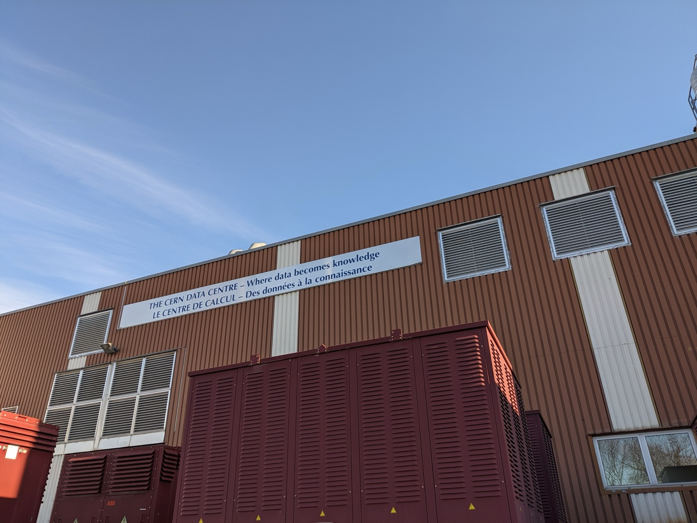
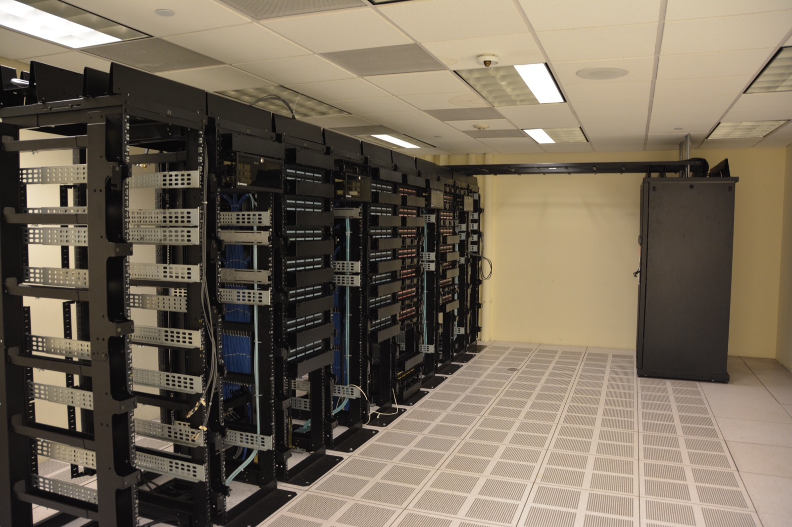

Executive Summary
In the summer of 2026, what stood in the way of AI infrastructure was neither chips nor capital. Across the United States, 75 data center projects worth $130 billion stalled. The surface reason was community opposition, but the substance behind that opposition was rising electricity bills and grid strain. At the same time, the grid itself is running into physical limits: the research firm Gartner expects 40% of new AI data centers to face operational constraints from power availability by 2027. AI's scaling constraint has moved from capital to chips, and now to power.
When power becomes the currency, the unit of account changes too. The question is no longer how large your model is, but how much useful output you extract per watt. And here is the point most organizations miss: training and inference run on redundant, low-quality data is wasted electricity, full stop. Research on data pruning and deduplication has shown, again and again, that the same performance can be reached with far fewer tokens and training steps. As long as compute scales with power, cutting tokens cuts watts.
That is why sequence matters. While hyperscalers restart nuclear reactors and sign 20-year power purchase agreements — securing generation capacity takes years and billions of dollars — the lever most companies can reach first is their data. Stripping duplicates out of training data, cutting low-quality samples, and reducing retraining frequency and inference context are energy savings you can act on today, before a single power plant breaks ground. Data quality has always been discussed in the language of cost and performance. Now it also translates into the language of power and carbon.
of AI data centers face power-driven
operating limits by 2027 (Gartner)
projects stalled by local opposition
(US, Q1 2026)
for the same performance
(FineWeb-Edu vs. C4)
of data centers queued at PJM
(peak demand 168 GW · 20-year high)
Not Chips, Not Money: The Summer of 2026, When Power Built a Wall
In the summer of 2026, more than 75 US data center projects worth $130 billion ground to a halt. Not for want of capital, and not for want of GPUs. But flatten it all into the single sentence "electricity stopped the boom" and the causation gets blurred. Two distinct forces are tangled up in this story, and you have to separate them to see clearly what is actually happening.
1.1Axis A — Social resistance, with the power bill as the trigger
The "75 projects, $130 billion" figure originates in the Q1 2026 report from the research group Data Center Watch. Here the direct cause of the "halt" is not a physical shortage of electricity but community opposition. Organized opposition groups grew to 833 across 49 states, more than doubling in a single year. In just the first six weeks of 2026, more than 300 state bills were introduced and moratoriums were proposed in 14 states. On July 18, 2026, the first coordinated national protest was held across 142 cities in 42 states.
What matters is the substance of the opposition. The reasons residents cited were fears of soaring electricity bills, water consumption, and noise. In other words, it was not electricity itself but electricity bills and grid strain that dragged residents into the permitting fight. The worry that a data center pulling large volumes of local power would push everyone's rates up curdled into political resistance. Virginia is the epicenter: Prince William County and King George County alone account for more than $30 billion in projects at stake. In one poll, "not in my backyard" opposition to data centers reportedly jumped sharply within months (as cited by NBC News and others). That opposition is now hardening into cases where local ordinances ban data centers outright.
The 75 projects did not stop because the power supply was physically cut off. Resident opposition rooted in fear of higher bills and grid strain (demand-side social resistance) blocked the permits, and beneath that resistance lay the power problem. Power was the cause — but it worked through the channel of "the bills and the burden scare us," not "the supply ran out."

1.2Axis B — A separate physical grid constraint tightening on its own
Separately from Axis A, the grid's own physical limits are genuinely closing in. The two should not be conflated, yet it is also true that they point the same way. Gartner projects that by 2027, 40% of new AI data centers will face operational constraints from insufficient power availability (Gartner press release, 2024-11-12). In PJM, the largest US power market, data center interconnection requests reached 31 GW, and on July 2, 2026, peak demand hit 168 GW — a 20-year high. This is the moment when the metaphor "we have the chips but nowhere to plug them in" starts to be backed by statistics.
To sum up: the wall of summer 2026 was not one wall but two. One is social resistance with the power bill as its trigger; the other is a physical constraint in which interconnection queues and generation capacity are genuinely running short. Both have power at their root. So "electricity stopped the boom" is not an exaggeration — it is, precisely, a story you have to read on two layers.
The Moving Constraint: Capital → Chips → Power
AI scaling has always had a bottleneck. What has changed is where the bottleneck sits. In the early phase, the bottleneck was capital. Training a bigger model took more money, and the race for scale was a race for funding. In the next phase, the bottleneck was chips. In 2023–2024, high-end GPUs were scarce, lead times and prices spiked, and who had secured how many accelerators decided the competition. And now, in 2025–2026, the bottleneck is power. Even after you buy the chips, the electricity to run them — and the transmission and substation infrastructure to carry that electricity — has become the rate-limiting step.
| Phase | Bottleneck | Rate-limiting factor | Procurement cycle |
|---|---|---|---|
| Capital phase (early scale race) |
Money | Funding to grow model scale | Quarters to years |
| Chip phase (2023–2024) |
GPUs | Accelerator supply, lead time, price | Months |
| Power phase (2025–2026, now) |
Electricity & grid | Generation capacity, interconnection queue | Multi-year (5–12 yrs) |
The essence of the power phase is lead-time lag. GPUs can be sourced in months, but the substation infrastructure and new generation capacity a large data center needs take years. The indicator that shows this structural lag most sharply is the interconnection queue. To connect new generation or load to the grid you have to file and wait your turn, and the active US queue stood at 8,200 requests totaling 1,312 GW at the end of 2025 (LBNL, "Queued Up"). The median wait from application to commercial operation exceeds five years, and large projects that require new substation infrastructure can take 8 to 12 years.
(⚠️ Queue size varies dramatically with counting methodology. We use LBNL's active-queue figure of 1,312 GW, which has a clear methodology. The "2,600 GW backlog" cited by some secondary outlets is a cumulative, broad-definition tally that is not directly comparable to the LBNL number, so we do not mix them.)
The demand signal has also turned for the first time in 20 years. Interconnection requests in the Texas grid (ERCOT) roughly quadrupled in a single year, from 56 GW to more than 205 GW. Goldman Sachs projects US power demand to grow 2.4% a year on average from 2024 to 2030 — demand that had effectively flatlined near 0% for a decade has woken back up. Capital and chips were things the market could respond to within months by ramping supply; electricity and the grid are not. To say the bottleneck has moved to power is to say AI's growth rate is now tied to how fast power plants and transmission lines get built.
The Arithmetic of Power: How Much AI Eats, How Much the Grid Can Take
Ask how much power AI consumes and the honest answer is "we don't know exactly." Because companies almost never disclose official figures for training and inference energy, the widely cited numbers are mostly secondary estimates built on differing methodologies, and the spread between them runs to tens of times. So rather than memorizing a single number, it is more useful in practice to know where the uncertainty sits, and how much of it there is.
3.1Total data center demand — every institution uses a different ruler
The firmest floor is US measured data. Lawrence Berkeley National Laboratory (LBNL) put 2024 US data center power consumption at 192 TWh (4.7% of total US electricity), rising to 464 TWh in its 2028 reference scenario. Widen the lens to the world and the IEA's 2025 "Energy and AI" report projects roughly 415 TWh in 2024 growing to about 945 TWh by 2030 (under 3% of global electricity). Over the same window, consumption by AI-specific data centers grows much faster than the total — roughly tripling.
The trouble is that when you ask about the US share in 2030, the answers diverge by institution. The IEA offers under 3% on a global basis, Goldman Sachs 8% for the US, and EPRI 9–17% for the US. The numbers differ not because anyone is wrong but because the baselines (global vs. US) and scenarios differ. EPRI's wide band in particular is the product of a scenario design built on two axes — "the pace of AI tool adoption" and "the size of efficiency gains" — and the range itself is the message: power-demand forecasts are still in flux.
| Institution / report | Metric | Projection | Basis |
|---|---|---|---|
| LBNL (2025 update) | US DC power | 192 TWh (2024) → 464 TWh (2028) | US · measured/reference |
| IEA "Energy and AI" (2025) | Global DC power | 415 TWh (2024) → 945 TWh (2030), <3% of electricity | Global |
| Goldman Sachs | DC share of US power | 3% (2022) → 8% (2030) | US |
| EPRI "Powering Intelligence" | DC share of US power | 9–17% (2030, scenario range) | US · scenario |
3.2Training and inference costs — ranges only
Drill down to a single model's training and inference energy and the uncertainty grows. GPT-3's training power was calculated at 1,287 MWh in Google's carbon research, but for GPT-4-class training — where no official figure exists — secondary estimates spread from 1,750 MWh to 62,300 MWh, roughly a 35× range. Per-query inference is the same story. OpenAI's own published figure is about 0.3–0.34 Wh, while third-party estimates climb to tens of Wh for complex queries on newer models — a spread of more than 60×. That is why this report asserts no single value and presents everything as a range.
There are useful anchor points for calibrating the comparison. One Google search is about 0.3 Wh. On how much more an AI query uses than a web search, the figure "1,000×" floats around in the press, but it cannot be verified against a primary source, so this article does not use it. Instead we use EPRI's figure of about 10×. There is also an instructive anecdote: one early estimate of AI training carbon was later corrected in a recalculation that found it had been an 88× overestimate. Few cases illustrate better why you should be careful when citing AI's power and carbon numbers.
3.3The arithmetic on the receiving end — a 40-year-old grid
Demand is not the only thing that grew. The grid meant to absorb it has aged. The average age of US transmission infrastructure is about 40 years, and roughly 70% of transmission lines and large transformers are more than 25 years old. That said, this "40 years / 70%" traces back to a DOE survey from over a decade ago (2015), re-cited ever since, so it should be read as dated rather than freshly re-measured. The Brattle Group estimates that about 140,000 miles of transmission line must be replaced over the next 30 years, and that simply maintaining current levels will cost more than $700 billion. An aged web, now crowded by demand that has woken up for the first time in 20 years — that is the arithmetic the grid faces.

Useful Output per Watt: A New Currency, and an Anatomy of Waste
When power becomes the currency, the yardstick for performance changes too. Until now the AI race has largely been told through "how large is the model" — parameter counts, training tokens, benchmark scores were the currency. But the moment the bottleneck moved to power, the real question becomes who extracts more useful output from the same electricity. This is the heart of the report. What follows lays out what kind of currency useful output per watt really is, what eats away at it, and why the cheapest lever for cutting that waste turns out to be data efficiency.
4.1The new currency is already being measured
Performance-per-watt is not a rhetorical flourish; it is becoming a standard metric. Around 2022, MLCommons added a power-measurement track (MLPerf Power) to MLPerf, reporting performance-per-watt and total energy alongside standard workloads. Green500, the supercomputer ranking, has long used FLOPs/Watt as an official ranking metric. On the inference side, metrics like tokens-per-joule and tokens-per-watt are emerging. NVIDIA states that its latest-generation rack (GB300 NVL72) pushed performance-per-watt up to 25× higher than the previous Hopper generation. These are signals that the unit of account is shifting from "scale" to "efficiency per watt."

4.2An anatomy of waste — low-quality, redundant data is wasted power
Seen through the new currency, data quality — which had been discussed only in the language of cost and performance — shows a different face. Training data full of duplicate documents, low-quality samples, and label errors does not merely "degrade performance." It demands more compute to reach the same performance, and compute scales with power. In other words, the cruft in a dataset burns real electricity on every training run. Inference is no different. Needlessly long context, excessive calls, and the habit of retraining too often all burn watts without adding useful output — pure waste.
4.3The quantitative case for data efficiency — multiple independent studies
The claim "handle your data well and you save electricity" fails if it stays rhetorical. Fortunately, the first half of that causal chain — that data-efficiency work sharply cuts training tokens and steps — is an empirical result that several independent studies have shown repeatedly.
- Sorscher et al. 2022 (NeurIPS outstanding paper, arXiv:2206.14486): with a good pruning metric to select data, the error that had been declining slowly as a power law in dataset size starts to fall exponentially. The data needed for a given level of performance drops far faster than scaling laws would predict.
- FineWeb-Edu (arXiv:2406.17557): this corpus, filtered down to web data with high educational value, reaches the same MMLU performance using roughly 10× fewer tokens than C4 or Dolma. Even after removing more than 90% of the tokens from full FineWeb, knowledge-and-reasoning benchmarks like MMLU and ARC actually rose substantially.
- Lee et al. 2021 (deduplication, arXiv:2107.06499): removing duplicates from training data sharply reduces memorization and reaches equal or better accuracy in fewer training steps. Llama 3's data pipeline also applied hierarchical deduplication at the URL, line, and document level across the whole corpus, and follow-up line-filtering research cut training steps by up to 32% to reach baseline performance.
The causal chain (and its honest limit). Better data quality → fewer tokens and steps for the same performance (10–90% depending on the case) → less training compute (FLOPs) → less power consumed. The first three links are supported by the studies above. The last link follows from the physics that FLOPs scale with power. That said, no paper yet has directly calculated "data-efficiency work saves X% of power." So this article presents token and step reductions as evidence, connects power savings to them logically through the proportional relationship, and does not invent a specific percentage.
This is exactly where Pebblous's long-standing subject overlaps. Why data curation has become a bottleneck for foundation models again is covered in detail in a separate article. What that piece framed as "compute efficiency," this article translates once more into "power efficiency."
Hyperscalers in the Power Business
Once power became the rate-limiting step, hyperscalers began moving from "buying" power to "making" it. Companies that used to negotiate electricity rates are now restarting power plants, and going beyond purchase agreements to buy generation assets outright. AI companies are quietly turning into energy companies.
5.1Restarts and acquisitions — from procuring to owning
The most emblematic event is the Microsoft–Constellation deal. Microsoft agreed to take 835 MW for 20 years from a reactor adjacent to Three Mile Island — the site made famous by the 1979 partial meltdown — now restarted as the Crane Clean Energy Center. The restart investment is $1.6 billion, the supply is enough for roughly 800,000 homes, and the original 2028 restart target was pulled forward to 2027. Google went a step further. Beyond a power purchase agreement, it fully acquired the renewables developer Intersect Power for $4.75 billion (closed March 2026), pivoting its strategy toward owning generation assets themselves. Google's capital expenditure is projected to jump from about $90 billion in 2025 to as much as $185 billion in 2026.

The tilt toward nuclear is an industry-wide trend. Amazon (AWS) teamed with Talen to invest more than $20 billion near the Susquehanna nuclear plant; Meta issued an RFP for 1–4 GW of nuclear procurement; and Google signed a small modular reactor (SMR) deal with Kairos for up to 500 MW. Add up the nuclear contracts Big Tech signed over the past year and it exceeds 10 GW. The Stargate project from OpenAI, Oracle, and SoftBank is likewise premised on large-scale power procurement.
| Company | Partner / approach | Scale | Nature |
|---|---|---|---|
| Microsoft | Constellation (Three Mile Island restart) | 20-yr PPA, 835 MW, $1.6B investment | Reactor restart |
| Intersect Power acquisition | $4.75B full acquisition (2026-03) | Owns generation assets | |
| Amazon / AWS | Talen (Susquehanna nuclear) | $20B+ investment | Nuclear procurement |
| Kairos (SMR) | Up to 500 MW | Next-gen nuclear |
5.2The burden the grid bears
This procurement race leaves a burden on the grid. Goldman Sachs sees US data center power demand more than doubling from 31 GW in 2025 to 66 GW in 2027, with data centers' share of summer peak demand rising from 4.1% in 2025 to 8.5% in 2027. It estimates roughly $50 billion in new generation investment for data centers alone, and about $720 billion grid-wide by 2030. In a June 2026 Capgemini survey of 787 power and data center executives across 21 countries, many said peak demand would become "more extreme and less predictable," and a majority of power executives saw "the geographic concentration of data centers as a major obstacle to stable supply."
The hyperscalers' hunt for power plants is a supply-side solution available only to a well-capitalized few. Most companies have no such option. Which leaves one question — what does an organization that cannot build a power plant use to save watts?
Data Efficiency Comes First: The Cheap Alternative to Building a Power Plant
So the practitioner's question narrows to a single one. If power is the bottleneck, what should you tackle first? The answer comes from comparing cost and time. Securing new generation capacity takes years and billions of dollars — a reactor restart runs several years, and grid interconnection for a large project takes 8 to 12 years. Data efficiency, by contrast, is a lever you can start today at low marginal cost. That is why, in sequence, data efficiency comes first.
Execution lead-time comparison for adding generation capacity vs. improving data efficiency (conceptual). The time it takes to grow supply and the time it takes to cut demand (waste) differ by orders of magnitude.
The list a practitioner can act on today is concrete. Lower retraining frequency, strip duplicates and low-quality samples out of the training dataset, and cut inference context length and excessive calls — all three reduce watts, cost, and carbon at the same time. Supply-side solutions can travel alongside as complements. Approaches that raise performance-per-watt at the chip level, like brain-inspired low-power hardware, do not compete with data efficiency; they stack on top of it. The difference is that swapping hardware demands capital and lead time, whereas data is an asset you already hold in hand.
6.1The business and technical connection
Most outlets treat this episode as "grid infrastructure news." In that frame, data is invisible. But in a world where the bottleneck has moved to power, the quality of the data flowing into training and inference is a direct variable that determines useful output per watt. The data diagnosis (detecting duplicates, low quality, and label errors) and AI-Ready Data that Pebblous has long worked on are, from this angle, not just performance tools but energy-saving levers.
6.2The data-quality lens
The core equation is this — data efficiency = energy efficiency. Duplicates and cruft in training data not only burden the model's internal representations; they burn real electricity in the processing of that burden. Add the axis of power and carbon to a practice that has been discussed only in the language of cost and performance, and the same work is justified for three reasons at once: cost, performance, and energy.
6.3Practical implications for customers and partners
The more visibly power cost shows up as a line item in training and inference budgets, the larger the ROI of data efficiency grows. For the majority of organizations that cannot build a power plant, "how to save watts" ultimately becomes "how to tidy your data." This runs parallel to Korea's own infrastructure debate. Amid an investment flow centered on the container (compute) of national AI computing infrastructure, the question of what to put in that container and what to strip out — the place of data — remains a blank. Korea's own data center market is projected to grow from ₩6.2 trillion in 2024 to ₩10.2 trillion in 2028 (Korea Data Center Council), carrying challenges that mirror the US: concentration in the capital region, conflict over transmission build-out, and siting constraints on generation.
Editor's Note. The argument of this piece is not made to sell a particular product. It simply follows the logic: in a world where the bottleneck has moved to power, the equation "data efficiency = energy efficiency" holds, and so data-quality diagnosis and AI-Ready Data earn their keep from an energy standpoint as well as a performance and cost one. Pebblous holds this position as a provider of the lens that reads this issue not as "grid news" but as "a data-efficiency problem."
The wall of summer 2026 posed a new question to AI: from a race to make things bigger, to a race to make them more useful on the same electricity. The first move in that race begins not with a power plant, but with tidying the data you already hold in hand.
References
Academic (arXiv / papers)
- 1.Sorscher et al., "Beyond neural scaling laws: beating power law scaling via data pruning," NeurIPS 2022. arXiv:2206.14486
- 2.Penedo et al., "The FineWeb Datasets: Decanting the Web for the Finest Text Data at Scale," 2024. arXiv:2406.17557
- 3.Lee et al., "Deduplicating Training Data Makes Language Models Better," 2021. arXiv:2107.06499
- 4.Patterson et al., "Carbon Emissions and Large Neural Network Training," 2021. arXiv:2104.10350
Policy, statistics, institutions
- 5.Gartner, "Gartner Predicts Power Shortages Will Restrict 40% of AI Data Centers by 2027," press release, 2024-11-12. gartner.com
- 6.IEA, "Energy and AI," 2025. iea.org
- 7.LBNL, "2024 United States Data Center Energy Usage Report" (2025 Update, LBNL-2001637). eta-publications.lbl.gov
- 8.LBNL, "Queued Up: 2025 Edition" (interconnection queue). emp.lbl.gov/queues
- 9.EPRI, "Powering Intelligence: Analyzing Artificial Intelligence and Data Center Energy Consumption" (2024 white paper + 2026 update). epri.com
- 10.Goldman Sachs Research, "AI, data centers and the coming US power demand surge," 2025. goldmansachs.com
- 11.Data Center Watch (10a Labs), "Q1 2026 Report: Data Center Opposition." datacenterwatch.org
- 12.Capgemini Research Institute, "Power and data center executives survey," 2026-06. capgemini.com
Industry & media (secondary — traced back to primary sources)
- 13.NBC News, "Data center opposition is sharply rising in 2026, study finds." nbcnews.com
- 14.Tom's Hardware, "More than 75 data center build-outs worth $130 billion blocked in early 2026." tomshardware.com
- 15.Utility Dive / DCD, "Microsoft–Constellation Three Mile Island (Crane Clean Energy Center) 20-year PPA." utilitydive.com
Pebblous adjacent (cross-links)
- 16.Pebblous, "Why Data Curation Became a Bottleneck Again." blog/data-curation-bottleneck-foundation-models
- 17.Pebblous, "When Communities Block the Data Center." blog/monterey-park-data-center-ban
- 18.Pebblous, "Korea Breaks Ground on Its National AI Computing Center." report/korea-ai-compute-center-npu-2026-07
- 19.Pebblous, "Brain-Inspired, Low-Power AI Hardware." blog/flourish-brain-inspired-ai-500m